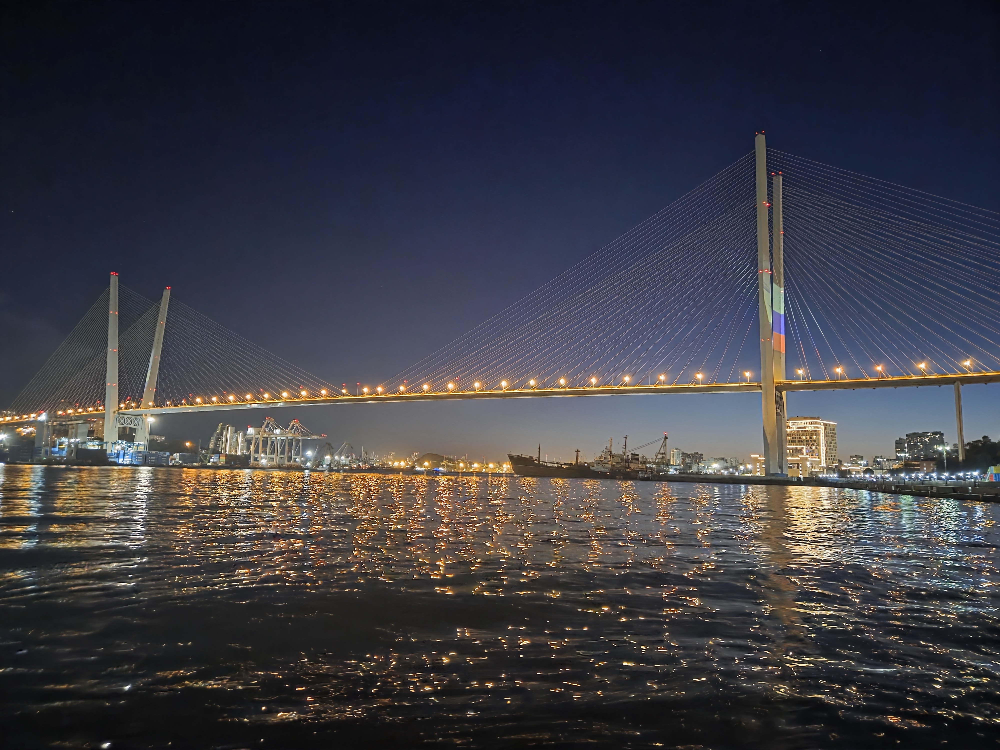
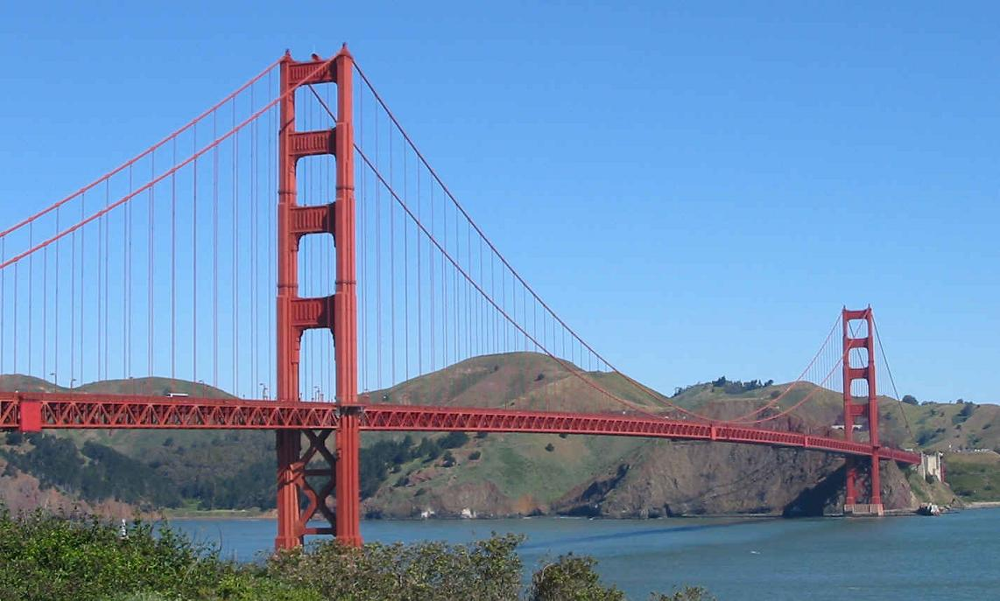
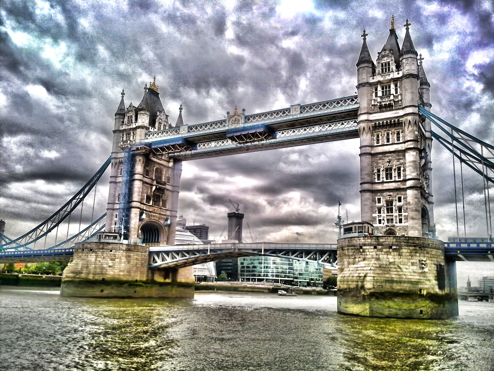
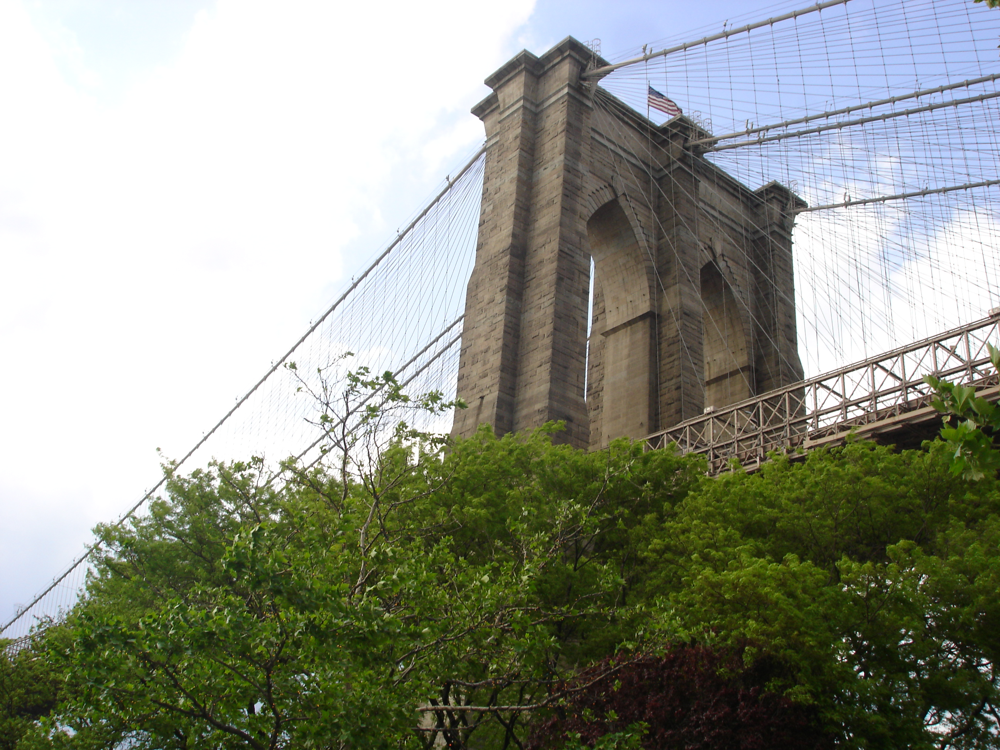
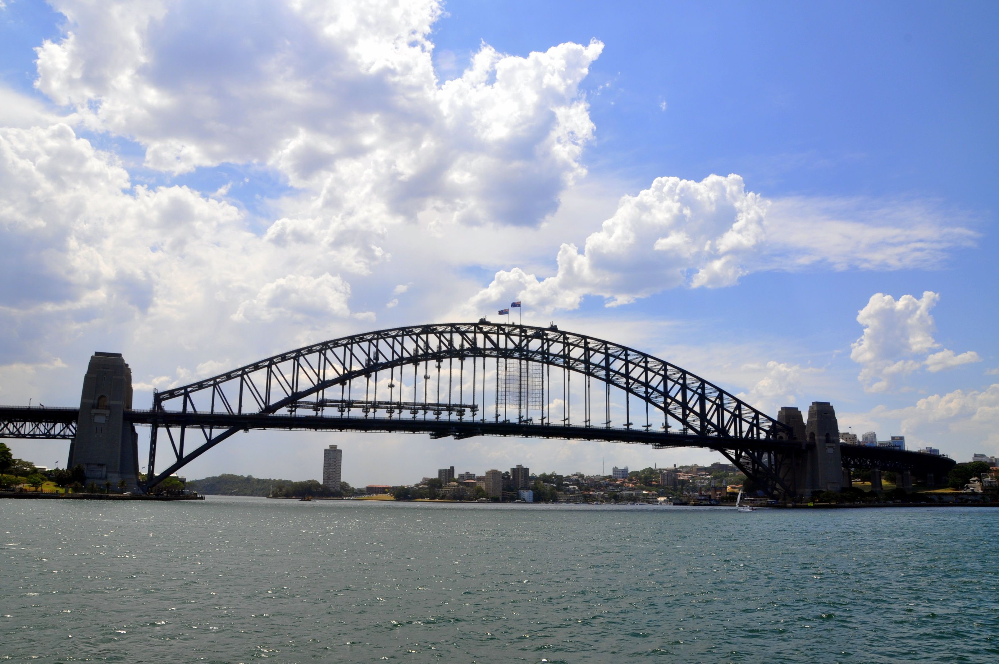
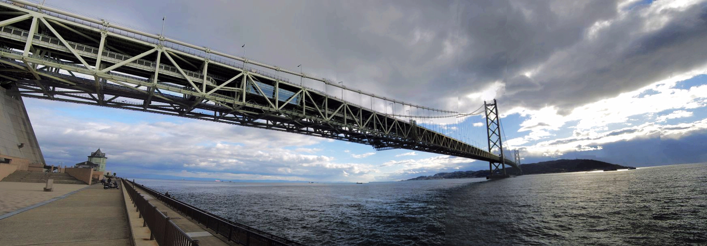
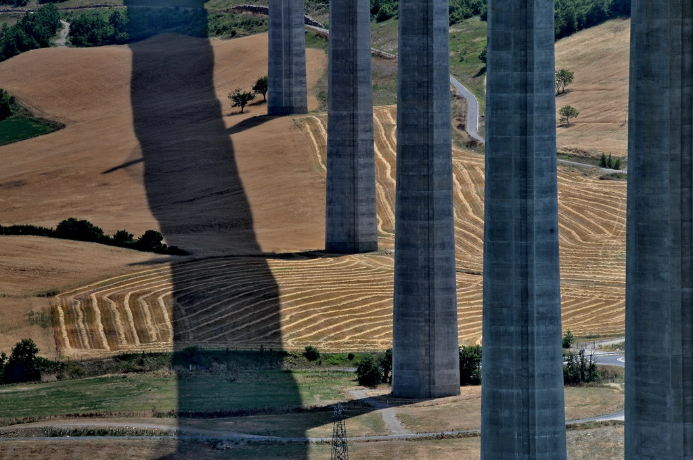
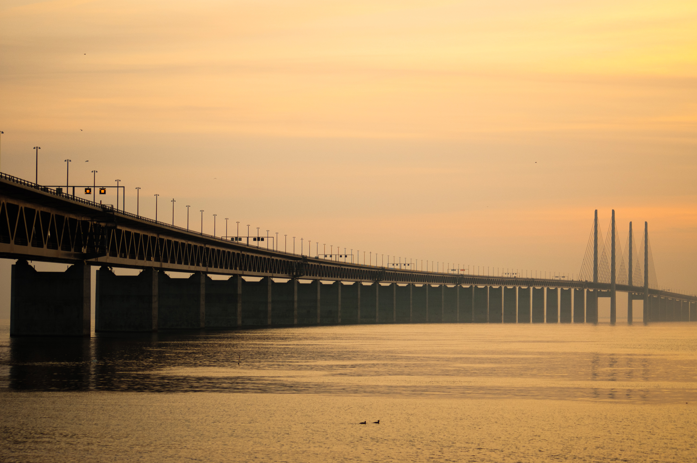
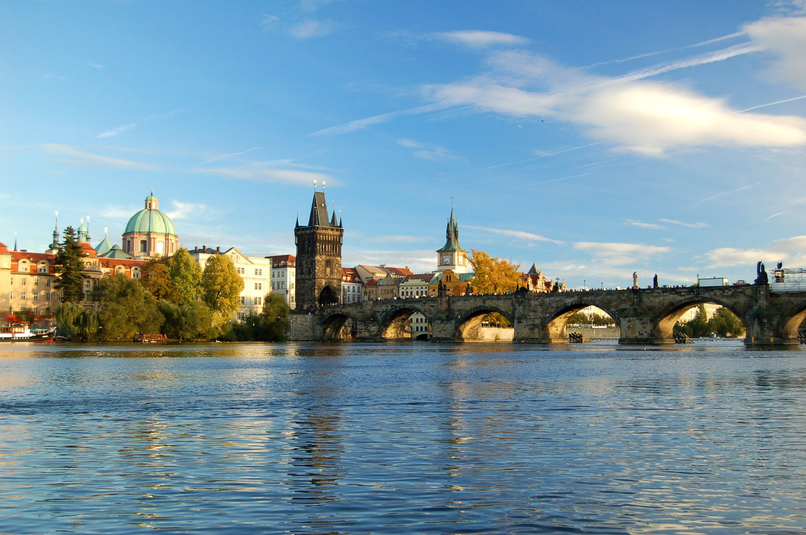

Русский мост — вантовый мост во Владивостоке,
соединяющий полуостров Назимова с островом Русский.
Мост был построен в рамках подготовки города
к саммиту АТЭС.
Мост был открыт в 2012 году. Его общая длина составляет около 3100 метров, а длина главного пролёта — 1104 метра.
Русский мост является одним из наиболее известных сооружений Владивостока и одним из крупнейших вантовых мостов мира.
Золотой мост — вантовый мост через бухту Золотой Рог во Владивостоке.
Он соединяет центр города с районом Чуркин и значительно сокращает время поездки между различными районами Владивостока.
Золотой мост был открыт в 2012 году. Его строительство также было связано с подготовкой Владивостока к саммиту АТЭС.
Golden Gate — подвесной мост в Сан-Франциско, США.
Он соединяет город Сан-Франциско с округом Марин. Мост был открыт в 1937 году и является одним из самых узнаваемых мостов в мире.
Общая длина Golden Gate составляет около 2737 метров, а длина главного пролёта — 1280 метров.
Tower Bridge — разводной мост через реку Темзу в Лондоне.
Мост был открыт в 1894 году. Он расположен рядом с Лондонским Тауэром, благодаря чему и получил своё название.
Tower Bridge является одной из самых известных достопримечательностей Великобритании.
Brooklyn Bridge — мост в Нью-Йорке, соединяющий районы Манхэттен и Бруклин.
Мост был открыт в 1883 году. На момент своего открытия он являлся одним из крупнейших подвесных мостов в мире.
Сегодня Brooklyn Bridge является одной из главных достопримечательностей Нью-Йорка.
Akashi Kaikyo Bridge — подвесной мост в Японии, соединяющий город Кобе с островом Авадзи.
Мост был открыт в 1998 году. Он известен своим огромным центральным пролётом и высокой устойчивостью к землетрясениям и сильному ветру.
Millau Viaduct — вантовый мост во Франции.
Он проходит через долину реки Тарн рядом с городом Мийо. Виадук был открыт в 2004 году.
Благодаря высоким опорам мост считается одним из самых впечатляющих инженерных сооружений Европы.
На сайте представлена информация об известных мостах мира, их местоположении, истории строительства и основных технических характеристиках.
Более подробную информацию можно посмотреть на странице Список мостов.
Разработчик: Корнев Виктор
Группа: Б9124-09.03.04